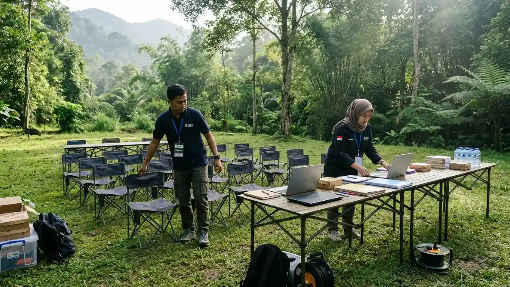
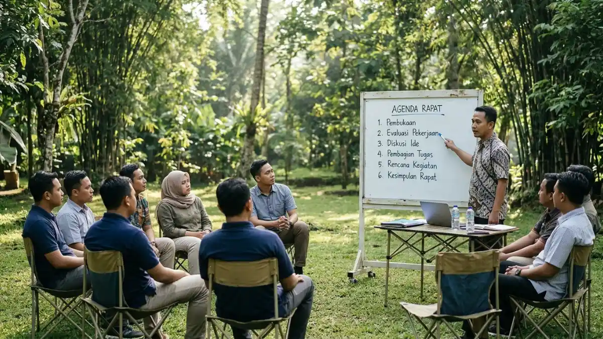

Persiapan matang mulai dari penataan kursi hingga perlengkapan pendukung menjadi kunci kelancaran meeting outdoor.Cara menyiapkan meeting outdoor yang efektif adalah menetapkan tujuan, memilih lokasi, menyusun agenda singkat, membagi peran, menyiapkan perlengkapan dan rencana cadangan, lalu mencatat keputusan.
- Rapat di ruang terbuka tetap membutuhkan satu tujuan utama dan agenda tertulis yang singkat.
- Empat peran dasar perlu ditunjuk lebih dulu, yaitu fasilitator, notulis, penjaga waktu, dan koordinator logistik.
- Perlengkapan dan rencana cadangan cuaca menentukan apakah rapat berjalan lancar.
- Jumlah perjalanan wisata domestik pada Juni 2026 mencapai 107,19 juta, sehingga bulan libur perlu direncanakan lebih awal.
- Keputusan harus dicatat dan dikirim pada hari yang sama.
- Bagaimana Menentukan Tujuan dan Peserta Meeting Outdoor?
- Bagaimana Menyusun Agenda yang Singkat dan Jelas?
- Siapa Saja yang Perlu Diberi Peran dalam Meeting Outdoor?
- Perlengkapan Apa yang Wajib Disiapkan untuk Meeting Outdoor?
- Kapan Waktu Terbaik Menjadwalkan Meeting Outdoor?
- Apa Rencana Cadangan jika Cuaca Buruk?
- Bagaimana Mencatat dan Menindaklanjuti Hasil Rapat?
- Daftar Periksa Hari Pelaksanaan
- Kesimpulan Praktis
- FAQ
Bagaimana Menentukan Tujuan dan Peserta Meeting Outdoor?
Tentukan satu tujuan utama, misalnya brainstorming atau evaluasi, lalu undang hanya peserta yang dibutuhkan agar diskusi di ruang terbuka tetap terarah dan mudah dikelola.
Mulailah dengan satu kalimat tujuan, misalnya menyusun rencana program kuartal berikutnya atau mengevaluasi hasil proyek.
Tujuan yang jelas membantu menentukan format, lokasi, dan durasi. Bila tujuannya membahas dokumen sensitif atau angka yang rumit, rapat dalam ruangan lebih tepat.
Jumlah peserta perlu disesuaikan dengan format. Julia Milner, pakar kepemimpinan yang dikutip Welcome to the Jungle pada Oktober 2023, menyebut walking meeting dengan tiga atau empat orang masih dapat dikelola. Untuk rapat duduk di area camping, batasnya ditentukan oleh luas lokasi dan kejelasan suara.
Beri tahu peserta lebih awal dan tanyakan kenyamanan mereka. Milner menilai menanyakan preferensi rekan kerja adalah sikap yang sopan, dan hal ini mengurangi keraguan terhadap format yang baru.
Bagaimana Menyusun Agenda yang Singkat dan Jelas?
Susun agenda tiga sampai lima poin dengan alokasi waktu, hasil yang diharapkan, dan urutan topik dari yang membutuhkan ide segar hingga yang paling teknis.
Agenda yang singkat menjaga fokus di tengah suasana santai. Setiap poin sebaiknya memuat nama topik, waktu pembahasan, dan keluaran yang diharapkan, misalnya daftar ide atau keputusan akhir.
Letakkan topik yang membutuhkan kreativitas di awal, saat energi peserta masih tinggi. Topik teknis dan penetapan tindak lanjut ditaruh di bagian akhir. Sisakan waktu singkat di penutup untuk merangkum keputusan.
Kirim agenda dan dokumen pendukung sebelum hari pelaksanaan. Dengan begitu, peserta tidak perlu membuka banyak berkas di lapangan, dan rapat dapat berjalan tanpa gangguan perangkat atau sinyal.

Penyampaian agenda rapat yang jelas menggunakan papan portabel menjaga alur diskusi tetap terarah dan fokus.Siapa Saja yang Perlu Diberi Peran dalam Meeting Outdoor?
Fasilitator, notulis, penjaga waktu, dan koordinator logistik adalah empat peran dasar yang perlu ditunjuk sebelum meeting outdoor dimulai agar tidak ada tugas yang terlewat.
Fasilitator memimpin diskusi, menjaga agar topik tidak melebar, dan memastikan semua peserta mendapat kesempatan bicara. Notulis mencatat keputusan, penanggung jawab, dan tenggat.
Penjaga waktu mengingatkan sisa durasi agar rapat tidak molor. Koordinator logistik mengurus lokasi, perlengkapan, konsumsi, dan rencana cadangan.
Pada rapat kecil, satu orang dapat memegang dua peran, tetapi tugasnya tetap perlu dibagi secara jelas.
Pembagian peran yang jelas mencegah kebiasaan umum di rapat santai, yaitu semua orang berasumsi orang lain yang akan mencatat atau mengurus perlengkapan.
Perlengkapan Apa yang Wajib Disiapkan untuk Meeting Outdoor?
Siapkan meja atau alas duduk, tempat teduh, air minum, alat tulis, perangkat pencatat, daya cadangan, dan perlengkapan cuaca seperti jas hujan agar rapat tidak terganggu.
Perlengkapan dasar mencakup meja lipat atau alas duduk, kursi, papan tulis portabel atau kertas besar, alat tulis, dan perangkat untuk mencatat. Daya cadangan seperti power bank membantu bila sumber listrik terbatas.
Perlengkapan cuaca meliputi payung, jas hujan, topi, tabir surya, dan terpal atau tenda. Air minum dan camilan ringan menjaga energi peserta, terutama pada rapat lebih dari satu jam.
Tim yang menggelar rapat di perkemahan dapat menyesuaikan daftar ini dengan perlengkapan meeting outdoor yang dibutuhkan di area camping Kota Batu, termasuk fasilitas yang biasanya sudah disediakan pengelola lokasi.
Kapan Waktu Terbaik Menjadwalkan Meeting Outdoor?
Pilih jam dengan suhu nyaman, umumnya pagi atau sore, dan hindari akhir pekan panjang atau musim libur ketika lokasi dan jalur menuju lokasi cenderung ramai.
Pagi hari biasanya lebih sejuk dan tenang, sehingga cocok untuk sesi yang membutuhkan konsentrasi. Sore hari dapat dipakai untuk sesi evaluasi yang lebih santai. Siang terik sebaiknya dihindari kecuali lokasinya benar-benar teduh.
Musim libur memengaruhi keramaian. Berdasarkan data Badan Pusat Statistik (BPS) yang dilansir investortrust.id, jumlah perjalanan wisatawan nusantara pada Juni 2026 mencapai 107.192.435 perjalanan.
Angka itu lebih tinggi dibanding April 2026 yang sebesar 97,55 juta perjalanan menurut data BPS yang dilaporkan Metro TV.
Artinya, lokasi populer cenderung lebih padat pada bulan libur. Pemesanan lokasi sebaiknya dilakukan lebih awal, dan hari kerja dapat menjadi pilihan agar suasana lebih tenang.
Apa Rencana Cadangan jika Cuaca Buruk?
Siapkan lokasi pengganti beratap, tentukan batas waktu keputusan pemindahan, dan beri tahu seluruh peserta sebelumnya agar rapat tetap berjalan tanpa kehilangan tujuan.
Rencana cadangan yang baik memuat tiga hal. Pertama, tempat pengganti seperti aula, gazebo tertutup, atau ruang pengelola lokasi. Kedua, batas waktu keputusan, misalnya satu atau dua jam sebelum rapat, berdasarkan prakiraan cuaca terbaru.
Ketiga, jalur komunikasi yang jelas. Kirim pemberitahuan lewat grup pesan agar peserta tahu apakah rapat tetap di luar atau dipindah.
Perlengkapan yang mudah dipindahkan, seperti kursi lipat dan papan tulis portabel, mempercepat proses ini.
Bila cuaca ekstrem membahayakan keselamatan, rapat sebaiknya dipindahkan atau dijadwalkan ulang. Tujuan rapat tetap lebih penting daripada memaksakan format luar ruangan.
Bagaimana Mencatat dan Menindaklanjuti Hasil Rapat?
Catat keputusan, penanggung jawab, dan tenggat langsung selama rapat, lalu kirim ringkasan tertulis kepada seluruh peserta pada hari yang sama sebelum ingatan memudar.
Suasana santai membuat banyak tim lupa mencatat. Notulis dapat memakai perangkat digital atau buku catatan, sementara papan tulis portabel membantu semua orang melihat poin keputusan secara langsung.
Format ringkasan yang praktis memuat tiga kolom, yaitu keputusan, penanggung jawab, dan tenggat. Kirim ringkasan melalui kanal yang biasa dipakai tim agar mudah ditemukan kembali.
Tutup siklus dengan evaluasi singkat. Tanyakan apa yang berjalan baik dan apa yang perlu diperbaiki. Hasil evaluasi ini membantu rapat berikutnya, dan manfaat meeting outdoor untuk produktivitas dan kekompakan tim akan lebih mudah dipertahankan bila perbaikan dilakukan secara berkala.
Daftar Periksa Hari Pelaksanaan
Pada hari pelaksanaan, periksa prakiraan cuaca, kondisi lokasi, perlengkapan, daya perangkat, daftar hadir, dan kesiapan peran sebelum peserta tiba agar rapat dimulai tepat waktu.
Tiba lebih awal sekitar tiga puluh menit membantu panitia menata area dan memeriksa kebersihan serta keamanan lokasi. Pastikan sumber air minum, toilet, dan tempat teduh dapat diakses.
Periksa kembali agenda tertulis, pembagian peran, dan rencana cadangan. Sambut peserta, jelaskan tujuan rapat dalam satu kalimat, lalu mulai sesuai jadwal.
Setelah rapat, kumpulkan sampah dan perlengkapan, lalu pastikan lokasi dikembalikan dalam keadaan bersih.
Informasi dasar tentang pengertian dan jenis meeting outdoor berguna bagi panitia baru yang ingin memahami konteks sebelum menggelar rapat pertamanya.
Kesimpulan Praktis
Menyiapkan meeting outdoor yang efektif berarti memperlakukannya seperti rapat serius dengan tujuan, agenda, peran, perlengkapan, dan rencana cadangan yang jelas.
- Tetapkan satu tujuan dan agenda tiga sampai lima poin.
- Tunjuk fasilitator, notulis, penjaga waktu, dan koordinator logistik.
- Siapkan rencana cuaca, catat keputusan, dan kirim ringkasan pada hari yang sama.
FAQ